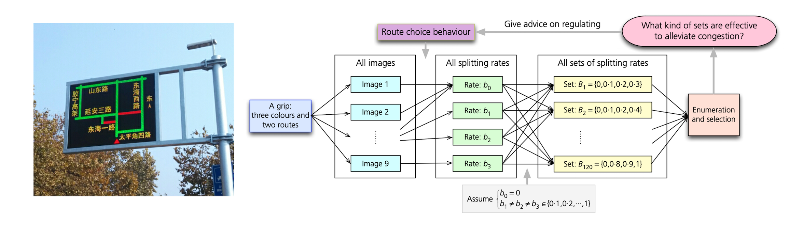
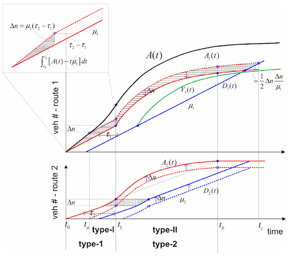
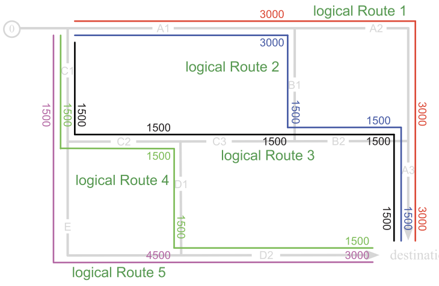
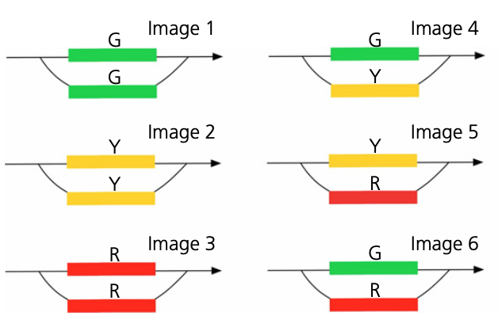
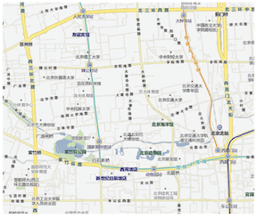
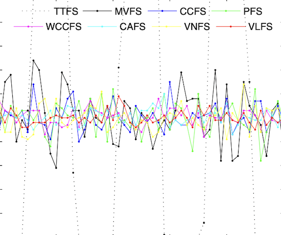

Route Guidance: Traffic Condition-Based Approaches
Overview
Variable message signs (VMSs) are roadside electronic displays that provide drivers with traffic conditions, travel times, incident warnings, and route guidance at critical decision points. By helping travelers divert before entering congested roads, VMSs can improve the use of available network capacity and alleviate traffic congestion. However, the relatively long update cycles may cause the displayed information to lag behind rapidly changing traffic conditions, while fixed sign locations and limited display capacity restrict where, when, and how much guidance can be delivered. These limitations can reduce the effectiveness of route guidance and, in some cases, merely shift congestion from one route to another.
To address these issues, as part of the largest national ITS initiative under China's 863 Program in 2011, we conducted a systematic investigation into information provision through VMSs. We first proposed a traffic-condition-based (TCB) route guidance approach designed for the relatively long information-update cycles of roadside signs[1]. The approach was then extended into a self-regulating framework that accounts for practical complexities, including overlapping routes, stochastic traffic, and signalized intersections[2]. We further examined the effectiveness of VMSs that communicate traffic conditions using three colors, i.e., red, yellow, and green[3], and developed a data-driven method for VMS locating problems, determining where such signs should be deployed[4].
Before this TCB program, we compared eight prevalent feedback strategies on an asymmetric two-route network. The analysis showed that only mean-velocity feedback consistently linked its guidance signal to travel time closely enough to approach user-optimal route use, providing an empirical and theoretical baseline for the later strategy designs[5].

Publications




